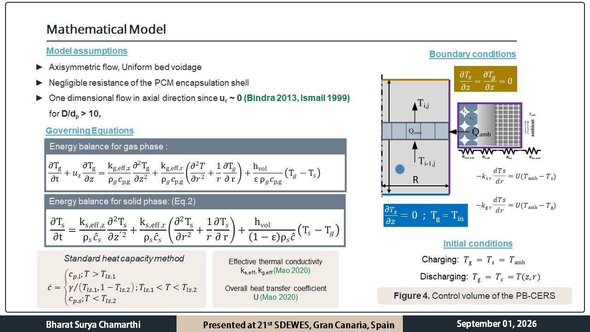

Second law performance evaluation of PCM based packed bed cryogenic energy recovery systems
Conference : 21st International Conference on Sustainable Development of Energy, Water and Environment Systems, 2026
Venue : Gran Canaria, Spain
Presentation date : 01st September, 2026
Motivation: Amongst the various parameters that govern the recovery performance of a PB-CERS, the role of charge cutoff temperature
is often overlooked. This process parameter is often considered as a design cosntraint imposed by upstream system, although there is no established basis for its selection. Design of PB-CERS under an arbitrary or a fixed charge cutoff conditions can lead to substandard overall operational efficiencies and thus leads to significant wastage of high grade cold. However, its selection requires the consideration of the thermodynamic performance of the
PB-CERS as well. Under the same cutoff condition, PB-CERS with different PCM materials or different geometric dimensions can exhibit different thermodynamic performance trends. Hence, the parameteric effects of these material and geoemtric design parameters at differnt charge cutoff temperature
gives insights into how one can select the charge cutoff temperature.
both
 Methodology:
The current research evaluated the effects of PCM phase transition temperature, latent heat on the exergy efficiency of the PB-CERS. Further, the effects of bed height and encapsualtion diameter were also studied.
To undertake these studies, a two dimensional heat transfer model based on the local thermal non equlibrium approach was adopted. The standard heat capacity model was used to capture the latent heat storage in the PCM during charging and discharging.
Main results: The studies show that the exergy efficiency of the PB-CERS is becomes highly sensitive to the charge cutoff temperatures when PCMs have lower phase transition temperatures.
Futher, the latent heat of the PCM has little effect on the exergy efficiency of the PB-CERS irrespective of the charge cutoff temperature. The geometric parameters of the packed bed, such as bed height and encapsulation diameter, also have significant effects on the exergy efficiency of the PB-CERS. While the efficiencies increased with increase in bed height and decrease in encapsulation size, the
percentage increase in efficiencies lowered with lowering of charge cutoff temperatures.
These results showcase the importance of charge cutoff temperatures as a critical process design parameter. The selection of the cutoff value cannot be arbitrary and is dependent majorly on the phase transition temperature of the PCM and the geometry of the
packed bed.
For detailed information, please refer to the publication in the SDEWES conference proceedings here.